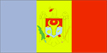
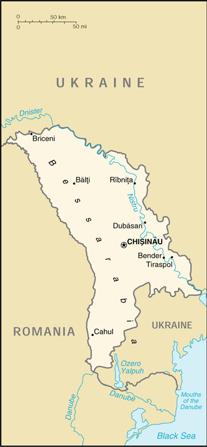

{kind=link}


| Moldova |  |
|
|
 | |
| Introduction |
Background: Formerly ruled by Romania, Moldova became part of the Soviet Union at the close of World War II. Although independent from the USSR since 1991, Russian forces have remained on Moldovan territory east of the Nistru (Dnister) River supporting the Slavic majority population (mostly Ukrainians and Russians) who have proclaimed a "Transnistria" republic.
| Geography |
Location: Eastern Europe, northeast of Romania
Geographic coordinates: 47 00 N, 29 00 E
Map references: Commonwealth of Independent States
Area:
total:
33,843 sq km
land:
33,371 sq km
water:
472 sq km
Area - comparative: slightly larger than Maryland
Land boundaries:
total:
1,389 km
border countries:
Romania 450 km, Ukraine 939 km
Coastline: 0 km (landlocked)
Maritime claims: none (landlocked)
Climate: moderate winters, warm summers
Terrain: rolling steppe, gradual slope south to Black Sea
Elevation extremes:
lowest point:
Nistru River 2 m
highest point:
Dealul Balanesti 430 m
Natural resources: lignite, phosphorites, gypsum, arable land
Land use:
arable land:
53%
permanent crops:
14%
permanent pastures:
13%
forests and woodland:
13%
other:
7% (1993 est.)
Irrigated land: 3,110 sq km (1993 est.)
Natural hazards: landslides (57 cases in 1998)
Environment - current issues: heavy use of agricultural chemicals, including banned pesticides such as DDT, has contaminated soil and groundwater; extensive soil erosion from poor farming methods
Environment - international agreements:
party to:
Air Pollution, Biodiversity, Climate Change, Desertification, Hazardous Wastes, Ozone Layer Protection
signed, but not ratified:
Air Pollution-Persistent Organic Pollutants
Geography - note: landlocked
| People |
Population: 4,430,654 (July 2000 est.)
Age structure:
0-14 years:
23% (male 523,373; female 505,064)
15-64 years:
67% (male 1,422,470; female 1,544,169)
65 years and over:
10% (male 161,659; female 273,919) (2000 est.)
Population growth rate: -0% (2000 est.)
Birth rate: 12.86 births/1,000 population (2000 est.)
Death rate: 12.58 deaths/1,000 population (2000 est.)
Net migration rate: -0.31 migrant(s)/1,000 population (2000 est.)
Sex ratio:
at birth:
1.05 male(s)/female
under 15 years:
1.04 male(s)/female
15-64 years:
0.92 male(s)/female
65 years and over:
0.59 male(s)/female
total population:
0.91 male(s)/female (2000 est.)
Infant mortality rate: 43.32 deaths/1,000 live births (2000 est.)
Life expectancy at birth:
total population:
64.45 years
male:
59.92 years
female:
69.22 years (2000 est.)
Total fertility rate: 1.63 children born/woman (2000 est.)
Nationality:
noun:
Moldovan(s)
adjective:
Moldovan
Ethnic groups:
Moldavian/Romanian 64.5%, Ukrainian 13.8%, Russian 13%, Gagauz 3.5%, Jewish 1.5%, Bulgarian 2%, other 1.7% (1989 est.)
note:
internal disputes with ethnic Slavs in the Transnistrian region
Religions: Eastern Orthodox 98.5%, Jewish 1.5%, Baptist (only about 1,000 members) (1991)
Languages: Moldovan (official, virtually the same as the Romanian language), Russian, Gagauz (a Turkish dialect)
Literacy:
definition:
age 15 and over can read and write
total population:
96%
male:
99%
female:
94% (1989 est.)
| Government |
Country name:
conventional long form:
Republic of Moldova
conventional short form:
Moldova
local long form:
Republica Moldova
local short form:
none
former:
Soviet Socialist Republic of Moldova; Moldavia
Data code: MD
Government type: republic
Capital: Chisinau
Administrative divisions: 10 juletule (singular - juletul) 1 municipality* 1 autonomous territorial unit**; Balti, Cahul, Chisinau, Chisinau*, Dubasari, Edinet, Gagauzia**, Lapusna, Orhei, Soroca, Tighina, Ungheni
Independence: 27 August 1991 (from Soviet Union)
National holiday: Independence Day, 27 August 1991
Constitution: new constitution adopted 28 July 1994; replaces old Soviet constitution of 1979
Legal system: based on civil law system; Constitutional Court reviews legality of legislative acts and governmental decisions of resolution; it is unclear if Moldova accepts compulsory ICJ jurisdiction but accepts many UN and Organization for Security and Cooperation in Europe (OSCE) documents
Suffrage: 18 years of age; universal
Executive branch:
chief of state:
President Petru LUCINSCHI (since 15 January 1997)
head of government:
Prime Minister Dumitru BRAGHIS (since 21 December 1999), one first deputy prime minister and two deputy prime ministers
cabinet:
selected by prime minister-designate, subject to approval of parliament
elections:
president elected by popular vote for a four-year term; election last held 17 November 1996; runoff election 1 December 1996 (next to be held NA November-December 2000); according to the Moldovan constitution, the president, on consulting with the parliament, will designate a candidate for the office of prime minister; within 15 days from designation, the prime minister-designate will request a vote of confidence from the parliament regarding his/her work program and entire cabinet
election results:
Petru LUCINSCHI elected president; percent of vote - Petru LUCINSCHI 54%, Mircea SNEGUR 46%; Dumitru BRAGHIS was nominated by the president 16 December 1999 and was elected prime minister by a parliamentary vote of 57-4 (40 abstentions) on 21 December 1999
Legislative branch:
unicameral Parliament or Parlamentul (101 seats; parties and electoral blocs, as well as independent candidates, compete in popular elections to serve four-year terms)
elections:
last held 22 March 1998 (next to be held spring 2002)
election results:
percent of vote by party - PCM 30%, CDM 19%, PMDP 18%, PFD 9%; seats by party - PCM 40, CDM 26, PMDP 24, PFD 11
note:
the comparative breakdown of seats by faction is approximate
Judicial branch: Supreme Court; Constitutional Court is the sole authority of constitutional judicature
Political parties and leaders: Bloc for a Democratic and Prosperous Moldova or PMDP [Dumitru DIACOV]; Christian Democratic Popular Front or FPCD [Iurie ROSCA, chairman]; Communist Party or PCM [Vladimir VORONIN, first chairman]; Democratic Convention of Moldova or CDM [Mircea SNEGUR, chairman]; Party of Democratic Forces or PFD [Valeriu MATEI, chairman]
International organization participation: ACCT, BIS, BSEC, CCC, CE, CEI, CIS, EAPC, EBRD, ECE, FAO, IAEA, IBRD, ICAO, ICFTU, IDA, IFAD, IFC, ILO, IMF, Intelsat (nonsignatory user), Interpol, IOC, IOM (observer), ISO (correspondent), ITU, OPCW, OSCE, PFP, UN, UNCTAD, UNESCO, UNIDO, UPU, WHO, WIPO, WMO, WToO, WTrO (applicant)
Diplomatic representation in the US:
chief of mission:
Ambassador Ceslav CIOBANU
chancery:
2101 S Street NW, Washington, DC 20008
telephone:
[1] (202) 667-1130
FAX:
[1] (202) 667-1204
Diplomatic representation from the US:
chief of mission:
Ambassador Rudolf Villem PERINA
embassy:
Strada Alexei Mateevicie, #103, Chisinau 2009
mailing address:
use embassy street address; pouch address - American Embassy Chisinau, Department of State, Washington, DC 20521-7080
telephone:
[373] (2) 23-37-72
FAX:
[373] (2) 23-30-44
Flag description: same color scheme as Romania - three equal vertical bands of blue (hoist side), yellow, and red; emblem in center of flag is of a Roman eagle of gold outlined in black with a red beak and talons carrying a yellow cross in its beak and a green olive branch in its right talons and a yellow scepter in its left talons; on its breast is a shield divided horizontally red over blue with a stylized ox head, star, rose, and crescent all in black-outlined yellow
| Economy |
Economy - overview: Moldova enjoys a favorable climate and good farmland but has no major mineral deposits. As a result, the economy depends heavily on agriculture, featuring fruits, vegetables, wine, and tobacco. Moldova must import all of its supplies of oil, coal, and natural gas, largely from Russia. Energy shortages contributed to sharp production declines after the breakup of the Soviet Union in 1991. As part of an ambitious reform effort, Moldova introduced a stable convertible currency, freed all prices, stopped issuing preferential credits to state enterprises, backed steady land privatization, removed export controls, and freed interest rates. Yet these efforts could not offset the impact of political and economic difficulties, both internal and regional. In 1998, the economic troubles of Russia, by far Moldova's leading trade partner, were a major cause of the 8.6% drop in GDP; the value of the currency in relation to the dollar fell by half. In 1999, GDP fell again, by 4.4%, the fifth drop in the past six years; exports were down, and energy supplies continued erratic. GDP is expected to remain at about the same level in 2000.
GDP: purchasing power parity - $9.7 billion (1999 est.)
GDP - real growth rate: -4.4% (1999 est.)
GDP - per capita: purchasing power parity - $2,200 (1999 est.)
GDP - composition by sector:
agriculture:
31%
industry:
35%
services:
34% (1998)
Population below poverty line: 75% (1999 est.)
Household income or consumption by percentage share:
lowest 10%:
2.7%
highest 10%:
25.8% (1992)
Inflation rate (consumer prices): 38% (1999 est.)
Labor force: 1.7 million (1998)
Labor force - by occupation: agriculture 40.2%, industry 14.3%, other 45.5% (1998)
Unemployment rate: 2% (includes only officially registered unemployed; large numbers of underemployed workers) (September 1998)
Budget:
revenues:
$536 million
expenditures:
$594 million, including capital expenditures of $NA (1998 est.)
Industries: food processing, agricultural machinery, foundry equipment, refrigerators and freezers, washing machines, hosiery, sugar, vegetable oil, shoes, textiles
Industrial production growth rate: -10% (1999 est.)
Electricity - production: 5.661 billion kWh (1998)
Electricity - production by source:
fossil fuel:
93%
hydro:
7%
nuclear:
0%
other:
0% (1998)
Electricity - consumption: 7.065 billion kWh (1998)
Electricity - exports: 0 kWh (1998)
Electricity - imports: 1.8 billion kWh (1998)
Agriculture - products: vegetables, fruits, wine, grain, sugar beets, sunflower seed, tobacco; beef, milk
Exports: $470 million (f.o.b., 1999)
Exports - commodities: foodstuffs, wine, and tobacco 66%; textiles and footwear, machinery (1998)
Exports - partners: Russia 53%, Romania 10%, Ukraine 8%, Germany 5%, Belarus 4% (1998)
Imports: $560 million (f.o.b., 1999)
Imports - commodities: mineral products and fuel 31%, machinery and equipment, chemicals, textiles (1998)
Imports - partners: Russia 22%, Ukraine 16%, Romania 12%, Belarus 9%, Germany 5% (1998)
Debt - external: $1.3 billion (December 1999)
Economic aid - recipient: $100.8 million (1995); note - $547 million from the IMF and World Bank (1992-99)
Currency: Moldovan leu (MLD) (plural lei)
Exchange rates: lei (MLD) per US$1 (end of year) - 12.1408 (January 2000), 10.5158 (1999), 5.3707 (1998), 4.6236 (1997), 4.6045 (1996), 4.4958 (1995)
Fiscal year: calendar year
| Communications |
Telephones - main lines in use: 566,000 (1995)
Telephones - mobile cellular: 14 (1995)
Telephone system:
inadequate, outmoded, poor service outside Chisinau, some effort to modernize is under way
domestic:
new subscribers face long wait for service; mobile cellular telephone service being introduced
international:
service through Romania and Russia via landline; satellite earth stations - Intelsat, Eutelsat, and Intersputnik
Radio broadcast stations: AM 7, FM 50, shortwave 3 (1998)
Radios: 3.22 million (1997)
Television broadcast stations: 40 (1998)
Televisions: 1.26 million (1997)
Internet Service Providers (ISPs): 2 (1999)
| Transportation |
Railways:
total:
1,328 km
broad gauge:
1,328 km 1.520-m gauge (1992)
Highways:
total:
12,300 km
paved:
10,738 km
unpaved:
1,562 km (1996 est.)
Waterways: 424 km (1994)
Pipelines: natural gas 310 km (1992)
Ports and harbors: none
Airports: 26 (1994 est.)
Airports - with paved runways:
total:
8
over 3,047 m:
1
2,438 to 3,047 m:
2
1,524 to 2,437 m:
2
under 914 m:
3 (1994 est.)
Airports - with unpaved runways:
total:
18
2,438 to 3,047 m:
3
1,524 to 2,437 m:
2
914 to 1,523 m:
5
under 914 m:
8 (1994 est.)
| Military |
Military branches: Ground Forces, Air and Air Defense Forces, Republic Security Forces (internal and border troops)
Military manpower - military age: 18 years of age
Military manpower - availability:
males age 15-49:
1,156,705 (2000 est.)
Military manpower - fit for military service:
males age 15-49:
913,896 (2000 est.)
Military manpower - reaching military age annually:
males:
40,239 (2000 est.)
Military expenditures - dollar figure: $6 million (FY99)
Military expenditures - percent of GDP: 1% (FY99)
| Transnational Issues |
Disputes - international: separatist Transnistria region, comprising the area between the Nistru (Dniester) River and Ukraine, has its own de facto government, dominated by Moldovan Slavs
Illicit drugs: limited cultivation of opium poppy and cannabis, mostly for CIS consumption; transshipment point for illicit drugs from Southwest Asia via Central Asia to Russia, Western Europe and possibly the US